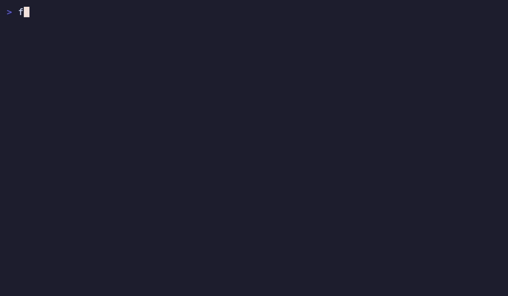

Find by typing
Start typing to filter the current directory. Use Ctrl+F for file search and Ctrl+R for content search.
Type to filter. F3 to preview. F5 to copy. Leave your shell in the directory you found.
A keyboard-driven file manager for macOS and Linux, with dual panes, familiar function keys, and actions for fd, ripgrep, and your editor.

Start typing to filter the current directory. Use Ctrl+F for file search and Ctrl+R for content search.
Ctrl+T opens two panes, Tab switches them, and F5 copies to the opposite pane. Preview with F3; open your editor with F4.
Launch with fz, browse to a directory, and exit there. Running fishez directly leaves your parent shell unchanged.
Homebrew includes fd and ripgrep. bat is optional for text previews.
brew install ioma8/tap/fishez
fishez --install-shellOpen a new terminal, or source the file printed by setup. Then run:
fzEsc clears→F3 previews→Exit and run pwdPrefer another route? See binary installer and Cargo options in the README.
Published binaries cover macOS and Linux on ARM64 and x86-64. Windows is not covered by the release and CI matrix.
Text previews work without image support. Inline image and GIF previews require kitty-graphics or iTerm2 image support.
Use Fn, or the Ctrl alternatives: Ctrl+P preview, Ctrl+O editor, and Ctrl+Y copy.
Its focus is a Commander-style default keymap combined with typing to filter and a shell wrapper that returns you to the selected directory.